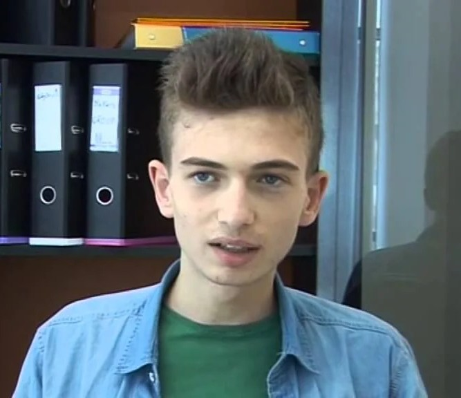

Major: Computer science | Level: Fourth Year

| Tool / Language | Official Link |
|---|---|
| Python | python.org |
| C++ | isocpp.org |
In the next four years, I see myself deeply established in the cybersecurity field as a professional penetration tester or digital forensics analyst. I aim to secure advanced industry certifications and contribute to robust cloud security infrastructures. Ultimately, I want to help organizations mitigate sophisticated cyber threats and protect critical digital assets. Pursuing postgraduate studies might also be part of my long-term academic growth.